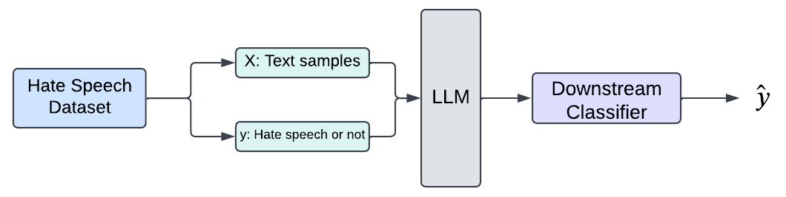
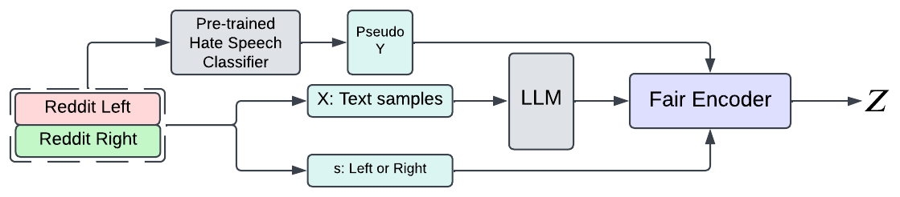

Mitigating Political Bias in Pre-Trained Large Language Models
Sepehr Dehdashtian, Mashrur Morshed{sepehr, morshedm} @ msu.edu
This article contains examples of hateful text that might be disturbing, distressing, and/or offensive.
Political Bias in Pre-Trained LLMs
Political Bias in Pre-Trained LLMs
Political Compass Test
Political Bias in Pre-Trained LLMs

Downstream Task
- Hate Speech Detection
- Misinformation Detection
Bias in Hate Speech Detection
Bias in Hate Speech Detection
Debiasing Hate Speech Detection Models
Problem Definition
Input
- $\tilde{X}$: Text Feature
- $Y$: Target Attribute (Hate speech or not)
- $S$: Sensitive Attribute (Political Leaning)
Output
- $Z$: Debiased Representation
Approach
Adversarial Representation Learning (ARL)
Adversarial Representation Learning (ARL)
$\text{Loss}(\tilde{X}; \Theta_{Enc}) = $ $L_T\left( f_T( Enc(\tilde{X}) ), Y \right)$ $ \\ - $ $\lambda$ $ L_A\left( f_A( Enc(\tilde{X}) ), S \right)$
Data
Data
Hate Speech Pre-Training
- Hate Speech Dataset: 159,872 Samples
Political Leaning
- Reddit Left: 555,226 Samples
- Reddit Right: 556,816 Samples
Implementation Details
Implementation Details
Libraries
- Pytorch Lightning: Overal Implementations
- Hugging Face: Pre-Trained LLMs
Pre-Training Hate Speech Detector
Pre-Training Hate Speech Detector
 Dataset
- Hate Speech Dataset (Yoder et al.)
Performance on Test
- Accuracy = $80\%$
Debiasing
Experiment
Evaluation Metrics
- Utility: Accuracy
- Bias: Demographic Parity Violation (DPV)
Demographic Parity Violation (DPV)
Demographic Parity Violation (DPV)
\[ DPV = | P( \textcolor{gold}{\hat{Y}= 1} | \textcolor{#ff8080}{s = 0}) - P(\textcolor{gold}{\hat{Y}= 1} | \textcolor{#ff8080}{s = 1}) | \]Results
Qualitative Evaluation
Qualitative Evaluation
"I havn't studied a lick of marxist theory but let me tell you, those communists don't know anything!"Before Debiasing Prediction → Hate Speech
After Debiasing Prediction → Not Hate Speech
Qualitative Evaluation
"I'm surprised the leftist media isn't blaming it on white supremacy"Before Debiasing Prediction → Hate Speech
After Debiasing Prediction → Not Hate Speech
Qualitative Evaluation
"I agree with your assessment of Trump, but saying you "have" to be stupid to support him isn't fair. There's plenty of intelligence and stupidity to go around."Before Debiasing Prediction → Hate Speech
After Debiasing Prediction → Not Hate Speech